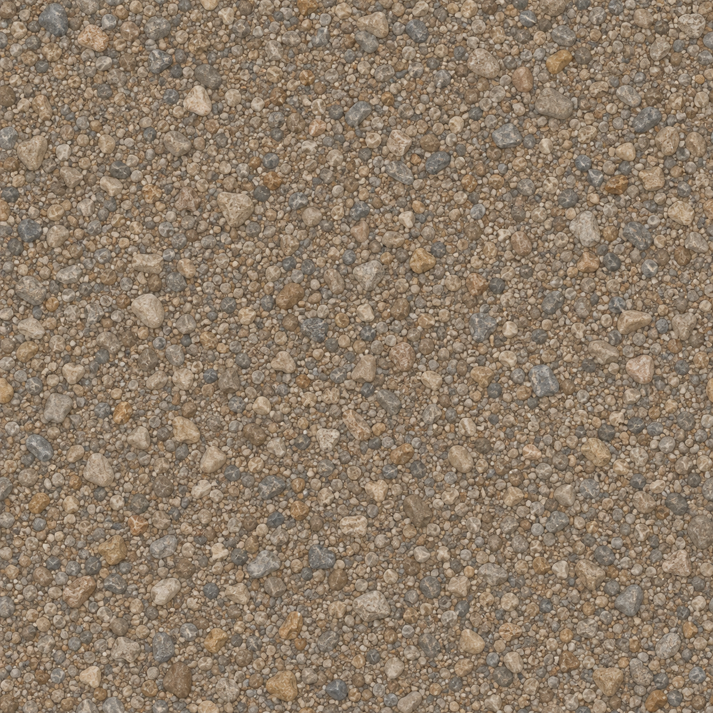
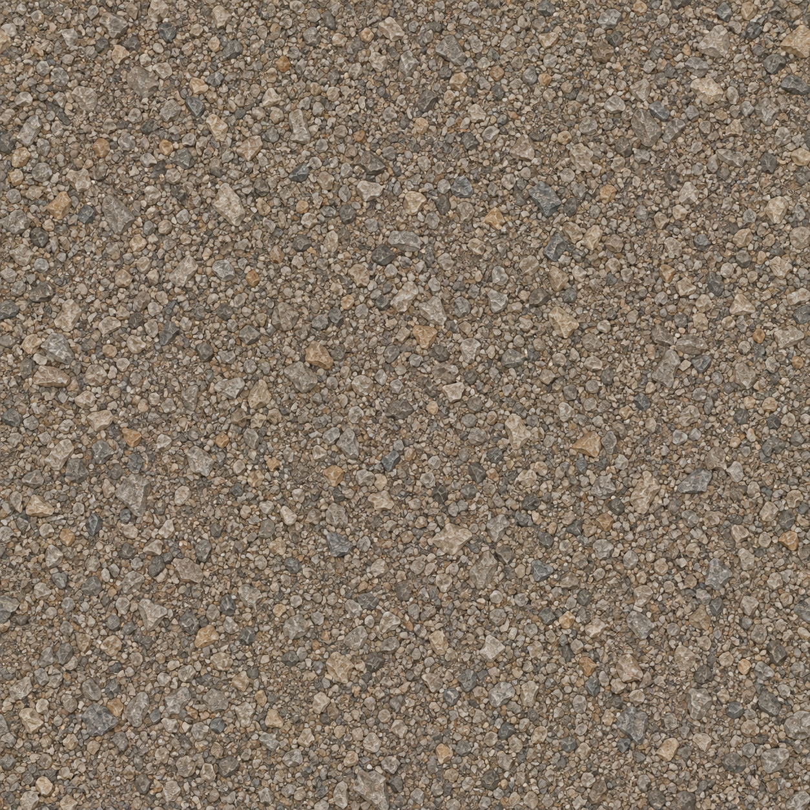
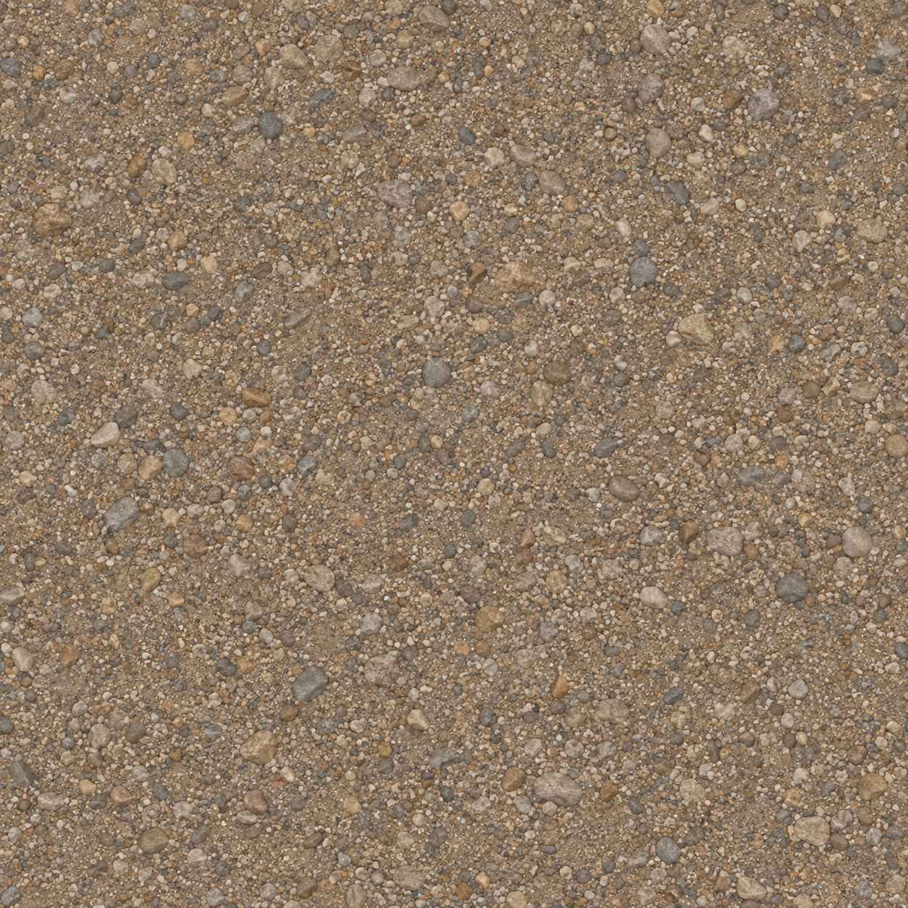
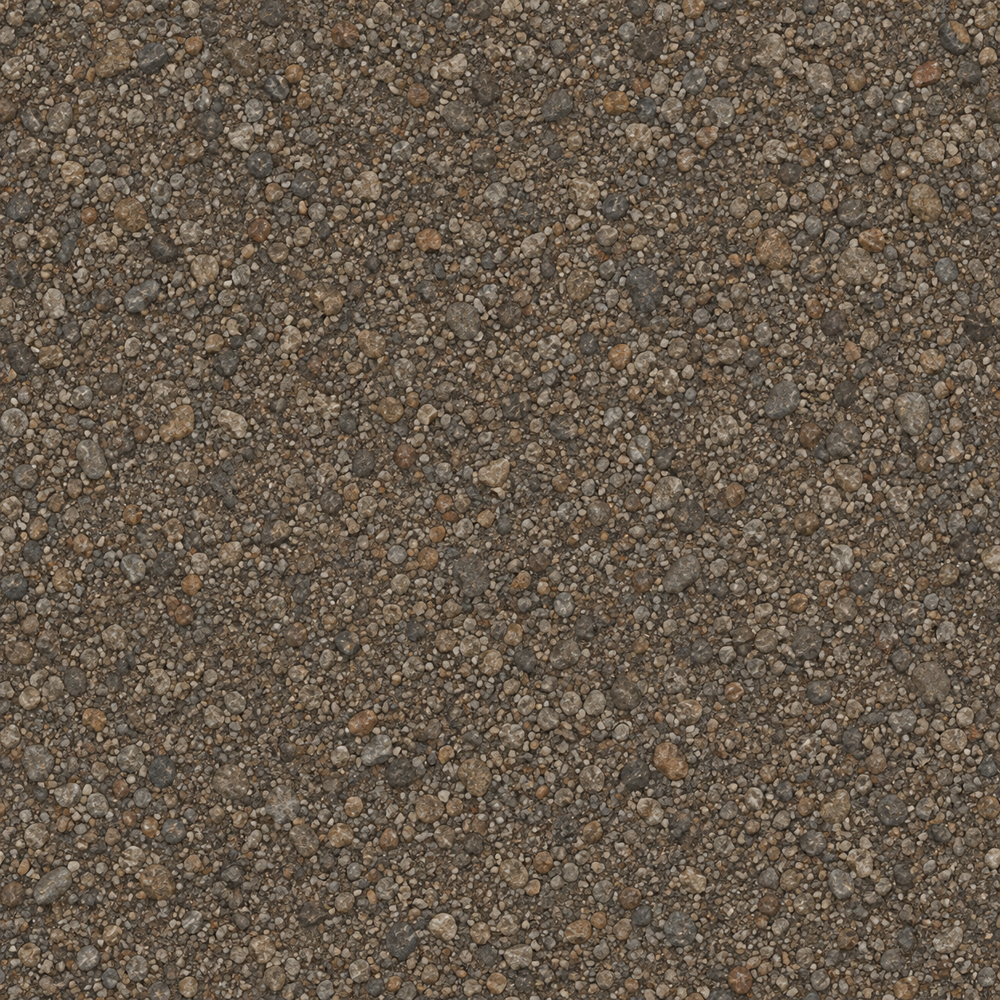

Heller Flusskies

RGB-Mittel: 141.07 / 123.44 / 104
Je 8 × 8 m, hier bei 256 × 256 Weltpixeln. Bild anklicken für die Quelle. Unveränderte Imagegen-Ergebnisse; Kanten vor Produktion quilten.

RGB-Mittel: 141.07 / 123.44 / 104

RGB-Mittel: 132.12 / 117.74 / 102.22

RGB-Mittel: 143.16 / 123.2 / 102.15

RGB-Mittel: 102.23 / 89.39 / 75.22